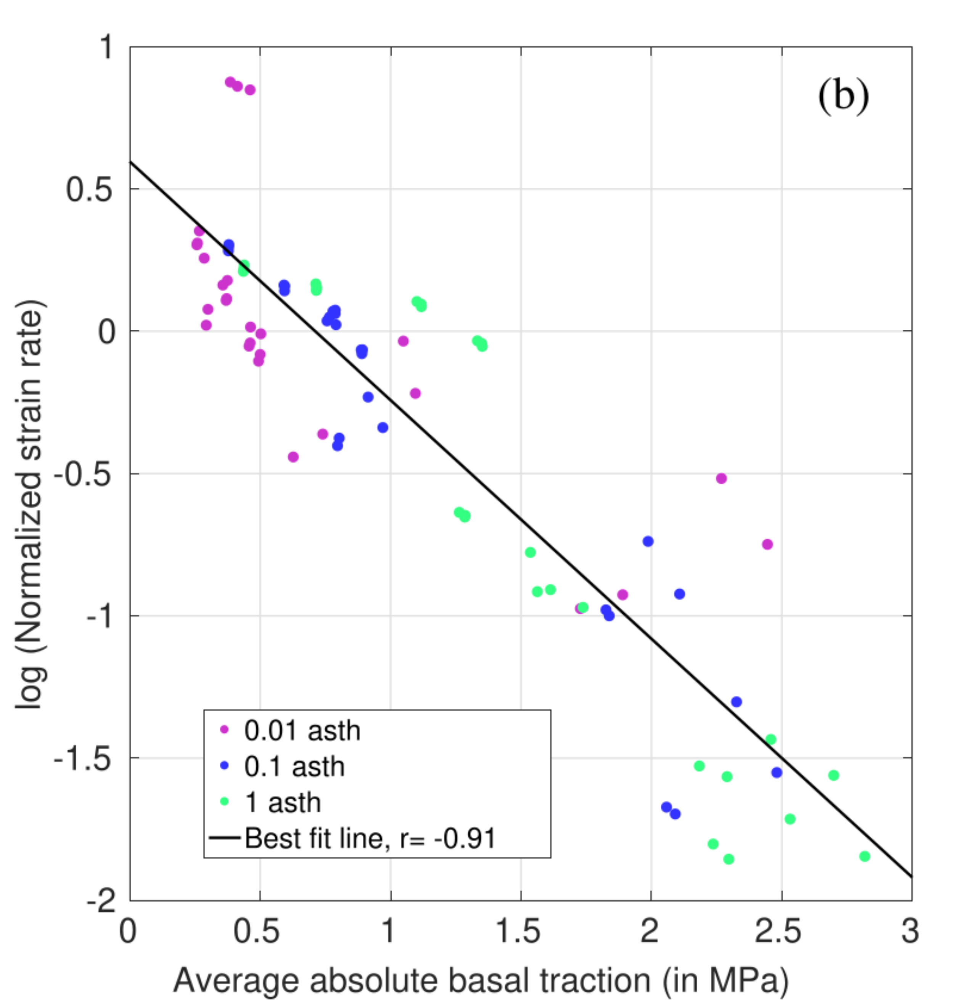
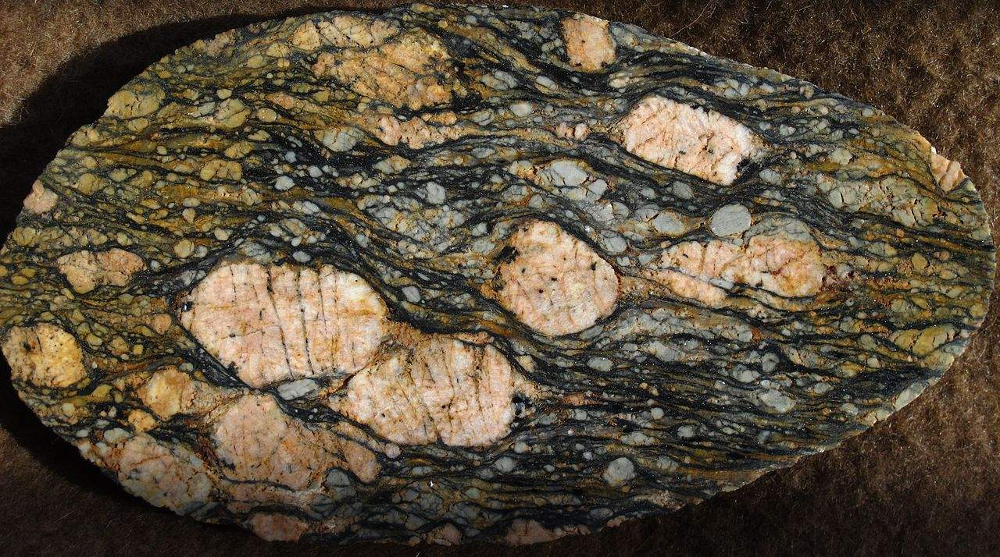
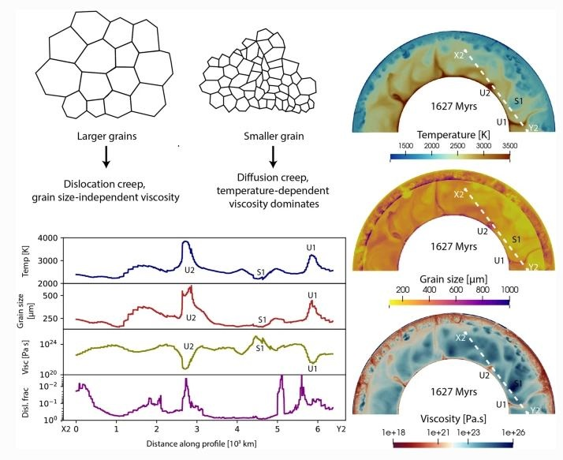
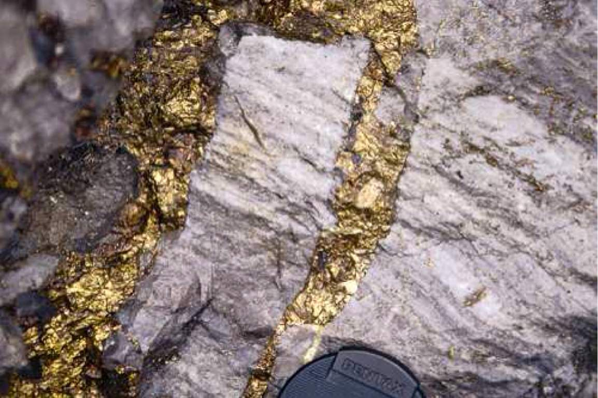
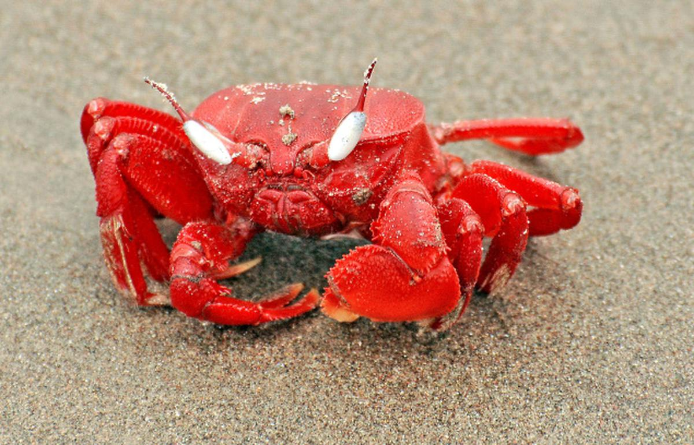

Research Collaborations
Craton Dynamics


Understanding the stability of cratons within tectonically active planet like Earth stands as one of the grand challenges in geodynamics. Through the development of
numerical models of craton
evolution, my research aims to shed light on why certain cratons have remained stable for over 3 billion years, while others, such as the North China Craton,
have undergone complete destruction.
My findings suggest that the combined effects of viscosity and thickness play a crucial role in enhancing the strength of cratons, thereby shielding
them from tectonic recycling. Two key theoretical insights:
1. Stress and strain-rates exhibit an inverse relationship at the base of the lithosphere , leading to decreased deformation beneath thick cratons.
2. The thickness and viscosity of cratons induce a convective self-compression , further enhancing
their resistance against disintegrating forces.
My research also indicates that cratons require a minimum viscosity of 1023 Pa.s and that the surrounding asthenosphere
should not have a viscosity lower than 1020 Pa.s to support their long-term stability.
However, cratons face potential thinning or complete destruction under certain circumstances. Thermal weakening induced by mantle plumes, as observed
in the Indian craton, or metasomatic weakening caused by mantle/slab fluids, as seen in the case of the North China Craton, can lead to their demise.
My study delves into these mechanisms of craton destruction and compares the timescales involved in the process.
Publications
>> [7] J.Paul*, A. Spang, A. Piccolo. Flat slab induced weakening and destruction of the North China craton, (submitted)
>> [6] J. Paul*, C.P. Conrad, T.W. Becker, A. Ghosh, 2023. Convective self-compression of cratons and the
stabilization of old lithosphere. Geophysical Research Letters, 50, e2022GL101842. [Open access]
>> [5]. J. Paul, A. Ghosh, 2022. Could the Reunion plume have thinned the Indian craton?, Geology
>> [4] J. Paul, A. Ghosh, 2020. Evolution of cratons through the ages: A time-dependent study,
Earth and Planetary Science Letters, , 531, 115962.
[Online version]
>> [2] J. Paul*, A. Ghosh, C.P. Conrad, 2019. Traction and strain-rate at the base of the lithosphere:
An insight into cratonic survival. Geophysical Journal International, 217(2), 1024-1033
Grain size dependent Rheology


Numerous speculations surround the impact of grain size on mantle dynamics, yet the lack of available data,
whether experimental or natural, poses a substantial challenge in precisely determining this influence.
Recent mineral physics experiments have, however, provided estimates for the grain growth rate of bridgmanite-ferropericlase,
the primary mineral assemblage in the lower mantle. As part of the European Research Council project
UltraLVP: Chemistry and transport properties of bridgmanite controlling lower-mantle dynamics , I incorporated bridgmanite-ferropericlase
grain growth data into numerical models to investigate the effect of grain size in lower mantle viscosity.
The outcomes of the study revealed no significant impact of grain size on
controlling lower mantle viscosity. This result can be attributed to the slow growth of bridgmanite-ferropericlase compared
to upper mantle olivine grain growth, where small grain sizes have minimal influence on lower mantle viscosity. Conversely,
if forced to increase like olivine, the growth of bridgmanite-ferropericlase grains leads to a dislocation creep-induced deformation,
resulting in grain size-independent viscosity.
Publications
>> J. Paul*, G. J. Golabek, A. B. Rozel, P. J. Tackley, T. Katsura and H. Fei (2024). Effect of bridgmanite-ferropericlase grain size evolution on Earth's average mantle viscosity: Implications for mantle convection in early and present-day Earth. Progress in Earth and Planetary Sciences, 11 (64) [https://doi.org/10.1186/s40645-024-00658-3] .
Layered structure of hydrothermal ore complex and Geostatistics

This work is part of a project investigating the style of hydrothermal mineralisation and ore formation
in and around Delhi-Aravalli fold belt. I have worked on the geochemical and geostatistical nalysis of amphibole
originated from the hydrothermal processes. We detected three generations of amphiboles. The last stage of amphibole
formation (A3) is probably associated with IOCG type mineralisation of this area.
Publications
1. A.S. Baidya, J. Paul, D.C. Pal, and D. Upadhyay, 2017. Mode of occurrence and geochemistry of amphibole in the Kolihan-Chandmari
copper deposits, Rajasthan, India: Insight into the ore-forming process. Ore Geology Reviews.
Ecology of mangrove crab

Crabs near chandipur sea beach show a strange behavior in their pattern of burrowing.
Larger the burrow diameter, they become more horizontal. All these large burrows are found only in the
backshore of the sea beach and they are oriented opposite to the sea. Geometrically they are more complex with "I", "J", and "Y" shaped burrow.
We explain all these parameter as a result of crab energitics.
Publications
>> 3. J. Paul, S. Mondal, R. Koyal, D. Sarkar, 2019. Burrow morphology of the ocypodid crab Ocypode ceratophthalma at
Chandipur Coast, Eastern India and its implications. Current Science